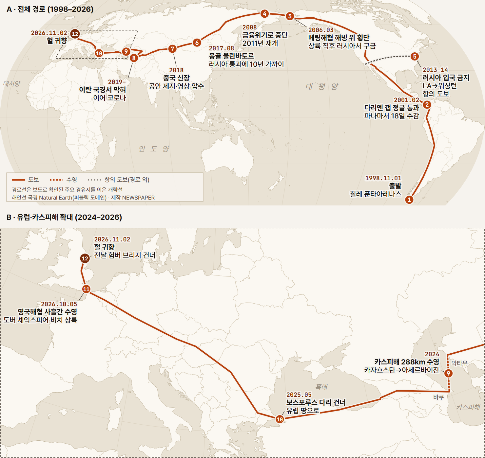

지도로 본 28년
남미 끝에서 아메리카 대륙을 따라 북쪽으로 올라가
얼어붙은 베링해협을 건너 아시아로 넘어갔고,
거기서 서쪽으로 유라시아를 가로질러 영국에 닿았다.
지도는 대서양에서 잘라 태평양을 가운데 둔 세계지도다.

| 1 | 1998.11.01 | 칠레 푼타아레나스 출발. 수중엔 약 500달러였다.[4] |
| 2 | 2001.02 | 콜롬비아–파나마 다리엔 갭 무장 충돌이 이어지던 정글을 통과한 뒤, 파나마에서 제한 국경지대를 넘은 혐의로 18일간 수감.[4][5] |
| 3 | 2006.03 | 베링해협 → 러시아 추코트카 동료 디미트리 키에페르와 얼어붙은 해협을 약 2주에 걸쳐 걸어서 건넘. 상륙 직후 지정 입국항을 거치지 않은 입국으로 구금돼 추방·입국금지 위기에 몰렸으나, 2006년 5월 러시아 항소법원이 여정을 계속하도록 허용.[5] |
| 4 | 2008 | 러시아 추코트카 빌리비노 빌리비노까지 걸은 뒤 2008년 금융위기로 후원사를 잃어 중단. 멕시코에서 기다리다 2011년 다시 걷기 시작.[5] |
| 5 | 2013–14 | 미국 로스앤젤레스 → 워싱턴 (경로 외) 러시아가 2012년 비자를 거부하고 5년 입국 금지를 내림 (금지 시점은 2012년·2013년으로 출처마다 다름). 항의의 뜻으로 LA에서 워싱턴 러시아대사관까지 걸었고, 2014년 금지가 풀림.[6][7] |
| 6 | 2017.08 | 몽골 울란바토르 러시아를 지나 울란바토르 도착. 몽골에서는 다른 탐험가들과 낙타 캐러밴으로 초원을 건넘.[5] |
| 7 | 2018 | 중국 신장 공안이 장비를 뒤지고 촬영본을 압수. 영국대사관이 나선 뒤 24시간 경찰 호위 속에 카자흐스탄 국경까지 걸음.[5] |
| 8 | 2019–2022 | 투르크메니스탄–이란 국경 이란 비자를 받지 못해 경로가 막혔고, 이어 코로나19로 국경이 닫힘. 2022년에야 다시 움직이기 시작.[8][9] |
| 9 | 2024 | 카스피해 러시아·이란 육로가 막혀 우즈베키스탄으로 되돌아가 키질쿰 사막을 건넌 뒤, 도보여행가 앤젤라 맥스웰과 카자흐스탄에서 아제르바이잔까지 288km를 헤엄치고 떠서 건넘.[4][10][9] |
| 10 | 2025.05 | 튀르키예 이스탄불 아제르바이잔·조지아·튀르키예를 걸어 지난 뒤 보스포루스 다리를 걸어서 건너 유럽으로.[5][9] |
| 11 | 2026.10.05 | 영국해협 → 도버 불가리아·루마니아·헝가리·오스트리아·독일·벨기에·프랑스를 거쳐 해협에 닿음. 사흘간 약 20시간을 헤엄쳐 셰익스피어 비치에 상륙.[11] |
| 12 | 2026.11.01–02 | 험버 브리지 → 헐 1일 짙은 안개 속에 험버 브리지를 건넜고, 2일 시청 환영식 뒤 어머니 집에 도착.[12][1] |